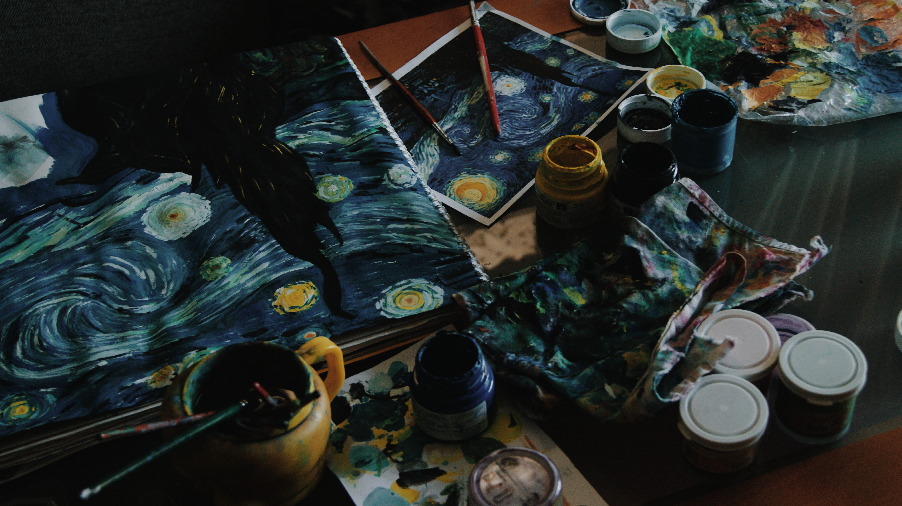
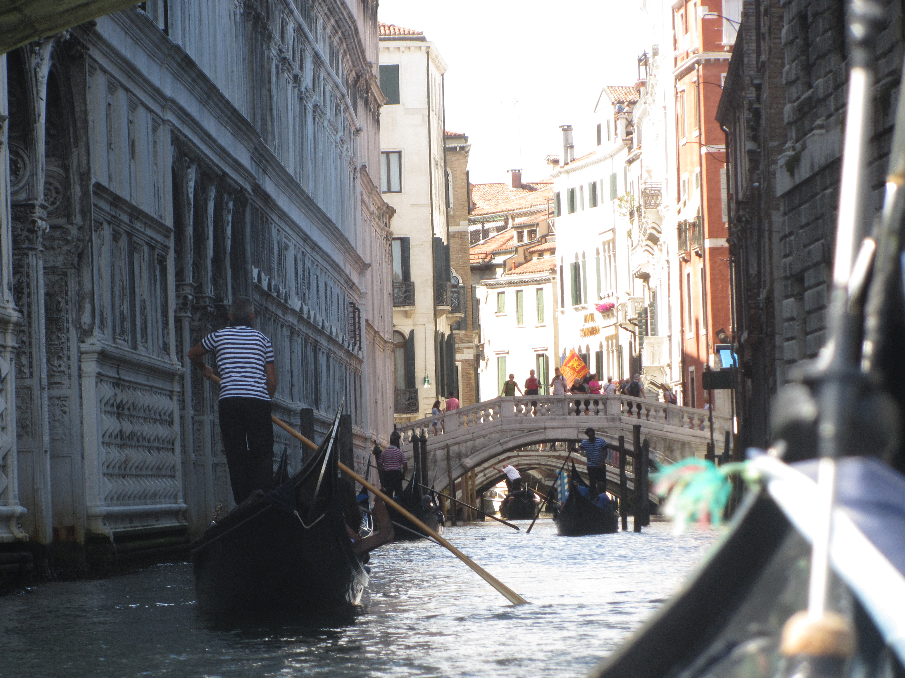

Statement
Recordo quan era petita que vaig agafar un llibreta i vaig començar a escriure amb mala lletra però amb bona intenció, tot allò que en aquell moment m’apassionava, els meus somnis, les meves aspiracions… i entre mig de moltes paraules vaig escriure “M’agradaria fer una pel·lícula”, inclús al costat especificava que no m’importava si era llarga o curta, si parlava d’una cosa o d’una altra, sinó que el meu objectiu era crear. I potser és una font poc fiable, però no fa molts anys endarrera, quan vaig començar a plantejar-me la famosa pregunta de “I què vull ser quan sigui gran?”, al llegir-me això, algú dins meu em va recordar que naixem d’una manera, i que també en creixem d’una altre totalment diferent.
Mirant un documental sobre en Christoph Niemann, dissenyador gràfic, em vaig quedar amb una idea que sense pensar-hi la vaig relacionar amb el cinema. Ell parlava sobre la música pop, la qual mai ha inventat cap cançó nova, és més, sempre explica la mateixa historia però amb paraules i ritmes diferents. L’ésser humà porta des dels seus inicis cantant sobre això, però la idea de fer-ho d’una manera diferent, la idea de fer cinema d’una forma innovadora i interessant, és el que pot fer parar a l’espectador i pensar. Pensar que mai abans ningú havia encertat tant alhora d’explicar allò que a un li acaben d’ensenyar.
Ell ho relaciona amb el disseny gràfic, jo ho relaciono amb el cinema, i es que pot ser aplicable a qualsevol forma de creació. Tot tipus d’art que presenciem cada dia, ja ha estat creat, el que fa que ho veiem diferent és la creativitat. L’inoblidable film d’ “ET” és perfectament relacionable amb la idea de Déu i com aquest se’ns presentà als humans i immediatament el vam considerar un ésser infinitament pur. Steven Spielberg, però, potser fins i tot sense adonar-se’n, va saber reorganitzar els personatges, com la seva aparença o situació. I semblant la cosa més senzilla del món, va fer una de les pel·lícules que ha canviat la història del cinema.
Precisament, doncs, aquesta és la meva aspiració. Saber assolir un tipus de coneixement que em permeti arribar a crear un cosa que sembli que mai no hagi estat creada per ningú. Aquí hi influeix la tècnica i l’experiència, són la base de la comunicació, i això són anys d’estudi i preparació, inclús també per pensar i escollir quin és el paper que vull tenir dins d’aquesta creació. Dins del que cab, és molt fàcil tenir una idea de guió i pensar de realitzar-la, però a partir d’aquí hi ha un procés de desenvolupament més gran i complex del que de vegades un es pot arribar a imaginar.
Projectes
"El gat s'ha mort"
El gat s’ha mort és el resultat de la part pràctica del meu TdR de 2n de Batxillerat. Al tenir la pressió de ser un treball a llarg termini, la pluja d’idees es va transfomar en un procés agobiant, i conseqüentment se’m va fer molt difícil saber escollir la millor idea per avançar amb la resta del treball. Un dia però, recordant historietes amb la meva germana petita, vam recordar un somni que no fa masses anys endarrera vam somiar cadascuna per la seva banda just el mateix dia. Potser les nostres ments van jugar amb el que creiem que va passar aquella nit, però gràcies a això no vaig dubtar en aquest utilitzar aquest genial resultat de la nostra ment com a argument per el guió.
Amb la idea ja desenvolupada, vaig crear el pla de rodatge, vaig gravar i finalment només em va fer falta editar, tot per obra meva. Contrariament, com que el curt només l’havia d’entregar al claustre de professors, vaig decidir utilitzar música sense preocupar-me dels drets d’autor. Volia utilitzar cançons que escoltava de costum pensant també amb la seva lletra i el significat que representen i així que tot plegat acompanyés tant a les imatges com al argument.
M’agradaria comentar també, que vaig presentar el resultat al concurs dels Jocs Florals del meu institut i vaig obtenir el primer premi dins la categoria d’audiovisuals de tot Batxillerat.
"Hora blava"
Hora blava és una producció que vaig realitzar en equip amb un grup de classe anomenada CimMetratges. Realitzem un curs en que ens dediquem a fer una sèrie d’activitats relacionades amb el món del cinema, d’entre les quals també hi figura la improvització, ja que al final de curs tota aquesta feina resulta en un film en forma de curt i a causa de se un grup reduït hem de saber ocupar qualsevol funció dins d’aquesta, ja sigui actuant, com situar-se darrera les càmeres. En aquest cas, vaig haver de participar de manera més directa com a una de les protagonistes del curt, però hi ha molta feina darrera en la qual també hi vaig haver de treballar de primer mà.
Per començar, va donar la casualitat que la nostra tutora va descobrir un poble abandonat, anomenat Finestres, i cercant informació sobre aquesta petita localitat, vam descobrir la seva història i com va acabar sent despoblada per raons polítiques. Aquest poble resulta que es mantenia de la producció d’oli de les seves oliveres. Però un dia Franco va decidir col·locar un embassament allà on hi havien les oliveres per produir el seu oli. La gent del poble poc a poc va anar marxant, l’embassament poc a poc va anar creixent i massa ràpid les oliveres van desaparèixer. Ens vam quedar admirats davant la biografia d’aquest poble, de manera que vam decidir basar el film de final de curs en la història de Finestres.
Després de nombroses pluges d’idees, vam situar la trama de manera general i amb bon ritme vam començar a desenvolupar els diàlegs i les escenes amb el seu ordre i lògica corresponents.
L’argument ens parla d’una parella d’alumnes que se’n van a un poble abandonat a fer una sèrie de fotografies per la realització d’un treball per l’escola. Al principi tot va sobre rodes, però al final acaben descobrint de primera mà tot el patiment que va recaure en aquell poble quan encara estava viu. Finalment, vam muntar el pla de rodatge i ens vam traslladar allà durant tres dies i dues nits per gravar amb poc temps però amb ganes el que acabaria resultant en només 15min de vídeo.
Finalment, cal anunciar que aquest curt, l’hem presentat a una llarga llista de concursos, com el FIC-CAT, d’entre els quals mentrestant en alguns hem obtingut el lloc de finalistes.El tràiler està disponible aquí
"Black Rainbow"
Black Rainbow és un curt basat en el moviment surrealista i el concepte del bullying aplicat a les escoles, fent veure principalment el paper de les víctimes i els agressors dins d’aquest problema global.
Aquesta producció la vaig realitzar també amb el grup de CimMetratges i junts vam realitzar la pluja d’idees i tota la producció d’aquest. Per relacionar les idees entre sí, al ser surrealista, ens va ser difícil trobar un punt entre mig entre la realitat i l’inconscient per fer arribar minimament al públic la idea que voliem transmetre.
Tanmateix, amb aquest curt ens vam presentar al FIC-CAT de l’any passat i vam arribar a la final del concurs. Aquest any també ens hem presentat al CAC, i mentrestant hem arribat a la final però aspirem a guanyar el primer o el segon premi per impulsar la activitat que fem amb el mateix grup de CimMetratges. A més a més, l’ajuntament de Terrassa ens va donar la oportunitat d’anar a una escola destecable de Rubí per presentar el curt i així fer veure als seus alumnes la importancia del bullying en nens tant adolescents com més petits.
"Nadal Instantani"
Nadal Instantani, novament, és un curtmetratge que vaig realitzar amb el grup de classe de CimMetratges. És el resultat d’un petit projecte que vam presentar al festival de Nadal de la mateixa escola. El resultat mostra un costat diferent de les històries de Nadal, la gent gran que es queda sola durant aquestes festes ja que no sempre tenen algú o potser ni els ànims de compartir-ho amb la família o els amics.
Un altre vegada, vaig participar com a actriu dins la producció, però tant la feina del darrera com el treball de post-producció, compten amb la meva ajuda també. A més a més, vam fer contactes i vam aconseguir la partipació del famós comentarista Albert Om per la realització del fil conductor de la història.
Imatges
"Color cel"
"Estrellant la nit"
"Venècia"
"Lluna plena" (negatiu)
"Sol solet" (positiu)
"Dubtes i matinades"
Part 4